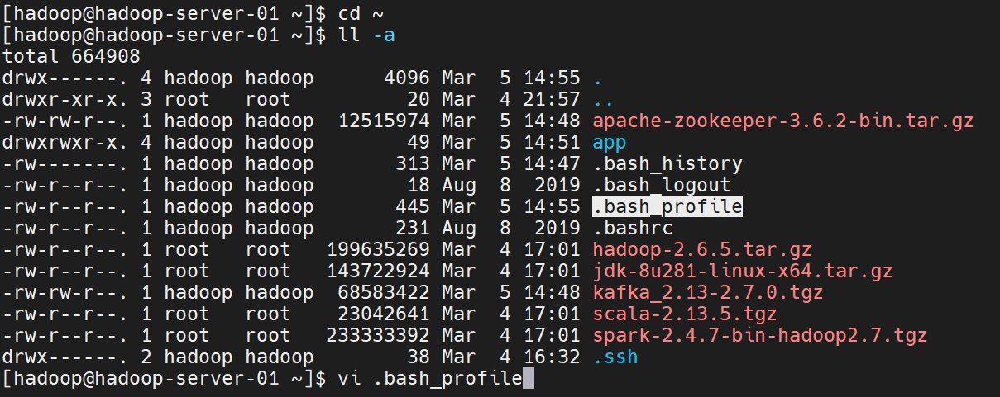
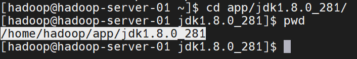
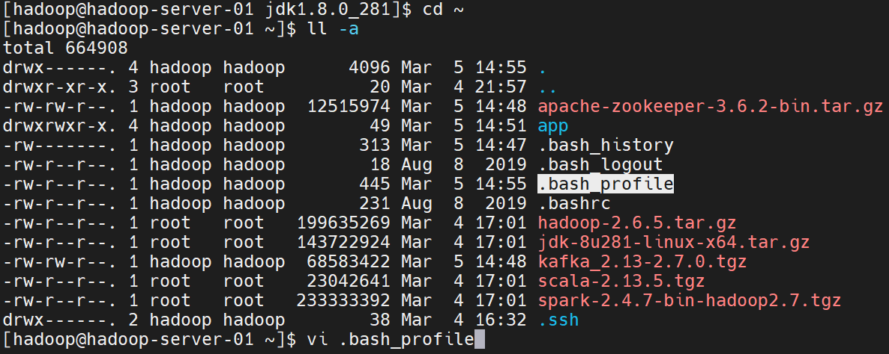
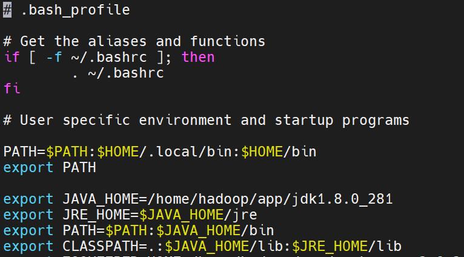
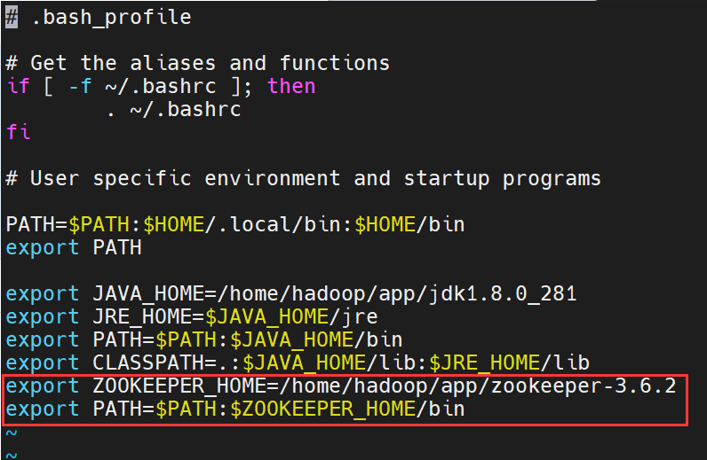
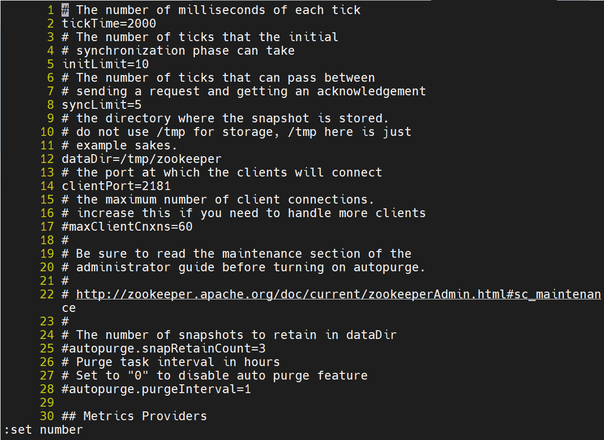
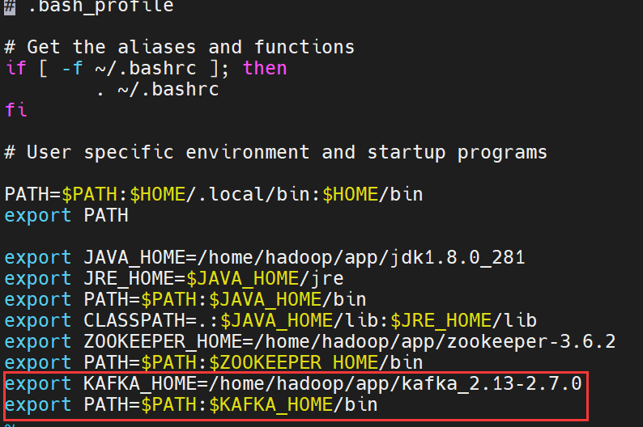

Kafka开发环境搭建
1、软件准备
CentOS7，JDK1.8，scala-2.13.5，Zookeeper3.6.2，Kafka
2、软件安装(以非root用户登录)
1
2
3
| [hadoop@hadoop-server-01 ~]$ cd ~
[hadoop@hadoop-server-01 ~]$ ll -a
[hadoop@hadoop-server-01 ~]$ mkdir app
|

1、Jdk安装
1、解压文件
1
2
3
| [hadoop@hadoop-server-01 ~]$ tar -zxvf jdk-8u281-linux-x64.tar.gz -C app
[hadoop@hadoop-server-01 ~]$ cd app/jdk1.8.0_281/
[hadoop@hadoop-server-01 ~]$ pwd
|

2、配置环境变量
1
2
3
| [hadoop@hadoop-server-01 jdk1.8.0_281]$ cd ~
[hadoop@hadoop-server-01 ~]$ ll -a
[hadoop@hadoop-server-01 ~]$ vi .bash_profile
|

编辑当前用户的环境变量配置文件，添加如下内容
1
2
3
4
| export JAVA_HOME=/home/hadoop/app/jdk1.8.0_281
export JRE_HOME=$JAVA_HOME/jre
export PATH=$PATH:$JAVA_HOME/bin
export CLASSPATH=.:$JAVA_HOME/lib:$JRE_HOME/lib
|

3、启用验证环境变量生效
1
2
| [hadoop@hadoop-server-01 ~]$ source .bash_profile
[hadoop@hadoop-server-01 ~]$ jps
|

出现Jps进程号说明jdk配置成功
2、Zookeeper安装
1、解压文件
1
2
3
4
5
6
| [hadoop@hadoop-server-01 ~]$ cd ~
[hadoop@hadoop-server-01 ~]$ tar -zxvf apache-zookeeper-3.6.2-bin.tar.gz -C app
[hadoop@hadoop-server-01 ~]$ mv apache-zookeeper-3.6.2-bin/ zookeeper-3.6.2/
[hadoop@hadoop-server-01 ~]$ cd app/zookeeper-3.6.2/
[hadoop@hadoop-server-01 zookeeper-3.6.2]$ pwd
/home/hadoop/app/zookeeper-3.6.2
|
2、配置环境变量
1
2
| [hadoop@hadoop-server-01 zookeeper-3.6.2]$ cd ~
[hadoop@hadoop-server-01 ~]$ vi .bash_profile
|
添加如下内容
1
2
| export ZOOKEEPER_HOME=/home/hadoop/app/zookeeper-3.6.2
export PATH=$PATH:$ZOOKEEPER_HOME/bin
|

3、启用环境变量
1
| [hadoop@hadoop-server-01 ~]$ source .bash_profile
|
4、修改Zookeeper配置文件
1
2
3
4
5
6
7
8
| [hadoop@hadoop-server-01 ~]$ cd app/zookeeper-3.6.2/conf/
[hadoop@hadoop-server-01 conf]$ ll
total 12
-rw-r--r--. 1 hadoop hadoop 535 Sep 4 20:43 configuration.xsl
-rw-r--r--. 1 hadoop hadoop 3435 Sep 4 20:43 log4j.properties
-rw-r--r--. 1 hadoop hadoop 1148 Sep 4 20:43 zoo_sample.cfg
[hadoop@hadoop-server-01 conf]$ cp zoo_sample.cfg zoo.cfg
[hadoop@hadoop-server-01 conf]$ vi zoo.cfg
|

配置文件的对应说明
在12行修改成这样
在13行添加日志文件目录

5、创建zookeeper数据和日志文件夹
1
2
3
4
5
6
7
8
9
| [hadoop@hadoop-server-01 conf]$ mkdir -p /tmp/zookeeper/data
[hadoop@hadoop-server-01 conf]$ mkdir -p /tmp/zookeeper/log
[hadoop@hadoop-server-01 conf]$ cd /tmp/zookeeper
[hadoop@hadoop-server-01 zookeeper]$ ll
[hadoop@hadoop-server-01 zookeeper]$ ll
total 0
drwxrwxr-x. 2 hadoop hadoop 6 Mar 5 15:42 data
drwxrwxr-x. 2 hadoop hadoop 6 Mar 5 15:42 log
[hadoop@hadoop-server-01 zookeeper]$
|
6、创建服务器编号文件
1
| [hadoop@hadoop-server-01 zookeeper]$ vi /tmp/zookeeper/data/myid
|
添加一个数值例如，0
7、启动Zookeeper服务
1
2
3
4
5
6
7
8
9
10
11
12
13
14
15
16
17
18
19
20
21
22
23
24
25
26
27
28
29
30
31
| [hadoop@hadoop-server-01 conf]$ cd /home/hadoop/app/zookeeper-3.6.2/bin
[hadoop@hadoop-server-01 bin]$ ll
total 64
-rwxr-xr-x. 1 hadoop hadoop 232 Sep 4 20:43 README.txt
-rwxr-xr-x. 1 hadoop hadoop 2066 Sep 4 20:43 zkCleanup.sh
-rwxr-xr-x. 1 hadoop hadoop 1158 Sep 4 20:43 zkCli.cmd
-rwxr-xr-x. 1 hadoop hadoop 1620 Sep 4 20:43 zkCli.sh
-rwxr-xr-x. 1 hadoop hadoop 1843 Sep 4 20:43 zkEnv.cmd
-rwxr-xr-x. 1 hadoop hadoop 3690 Sep 4 20:43 zkEnv.sh
-rwxr-xr-x. 1 hadoop hadoop 1286 Sep 4 20:43 zkServer.cmd
-rwxr-xr-x. 1 hadoop hadoop 4559 Sep 4 20:43 zkServer-initialize.sh
-rwxr-xr-x. 1 hadoop hadoop 11116 Sep 4 20:43 zkServer.sh
-rwxr-xr-x. 1 hadoop hadoop 988 Sep 4 20:43 zkSnapShotToolkit.cmd
-rwxr-xr-x. 1 hadoop hadoop 1377 Sep 4 20:43 zkSnapShotToolkit.sh
-rwxr-xr-x. 1 hadoop hadoop 996 Sep 4 20:43 zkTxnLogToolkit.cmd
-rwxr-xr-x. 1 hadoop hadoop 1385 Sep 4 20:43 zkTxnLogToolkit.sh
[hadoop@hadoop-server-01 bin]$ ./zkServer.sh start
ZooKeeper JMX enabled by default
Using config: /home/hadoop/app/zookeeper-3.6.2/bin/../conf/zoo.cfg
Starting zookeeper ... STARTED
[hadoop@hadoop-server-01 bin]$ pwd
/home/hadoop/app/zookeeper-3.6.2/bin
[hadoop@hadoop-server-01 bin]$ jps
4272 Jps
4126 QuorumPeerMain
[hadoop@hadoop-server-01 bin]$
[hadoop@hadoop-server-01 bin]$ ./zkServer.sh status
ZooKeeper JMX enabled by default
Using config: /home/hadoop/app/zookeeper-3.6.2/bin/../conf/zoo.cfg
Client port found: 2181. Client address: localhost. Client SSL: false.
Mode: standalone
|
8、集群环境配置
修改所有服务器的hosts
切换到root用户
su root然后输入root密码
修改hosts
vi /etc/hosts
修改hosts为所有对应服务器
1
2
3
4
| 192.168.161.131 hadoop-server-01
192.168.161.132 hadoop-server-02
192.168.161.133 hadoop-server-03
192.168.161.134 hadoop-server-04
|
修改所有服务器的zoo.cfg
su hadoop切换到hadoop用户
vi /home/hadoop/app/zookeeper-3.6.2/conf/zoo.cfg打开zookeeper配置文件
添加如下集群关系配置
1
2
3
4
| server.0=192.168.161.131:2888:3888
server.1=192.168.161.132:2888:3888
server.2=192.168.161.133:2888:3888
server.3=192.168.161.134:2888:3888
|
这个配置可以抽象成如下公式：
server.A=B:C:D
A表示一个数字，代表服务器编号，就是我们在2.6中创建的myid中的数字，这个编号要保持唯一
B表示服务器的IP地址。
C表示服务器与集群中的leader服务器交换信息的端口。
D表示选举时服务器相互通信端口。
9、关于集群的这个配置，有一些技巧
3、Kafka安装
1、解压文件
1
2
3
4
5
6
7
8
9
10
11
| [hadoop@hadoop-server-01 ~]$ cd ~
[hadoop@hadoop-server-01 ~]$ ll
total 664888
-rw-rw-r--. 1 hadoop hadoop 12515974 Mar 5 14:48 apache-zookeeper-3.6.2-bin.tar.gz
drwxrwxr-x. 4 hadoop hadoop 49 Mar 5 14:51 app
-rw-r--r--. 1 root root 199635269 Mar 4 17:01 hadoop-2.6.5.tar.gz
-rw-r--r--. 1 root root 143722924 Mar 4 17:01 jdk-8u281-linux-x64.tar.gz
-rw-rw-r--. 1 hadoop hadoop 68583422 Mar 5 14:48 kafka_2.13-2.7.0.tgz
-rw-r--r--. 1 root root 23042641 Mar 4 17:01 scala-2.13.5.tgz
-rw-r--r--. 1 root root 233333392 Mar 4 17:01 spark-2.4.7-bin-hadoop2.7.tgz
[hadoop@hadoop-server-01 ~]$ tar -zxvf kafka_2.13-2.7.0.tgz -C app
|
2、配置环境变量
1
2
3
4
5
| [hadoop@hadoop-server-01 ~]$ cd app/kafka_2.13-2.7.0/
[hadoop@hadoop-server-01 kafka_2.13-2.7.0]$ pwd
/home/hadoop/app/kafka_2.13-2.7.0
[hadoop@hadoop-server-01 kafka_2.13-2.7.0]$ cd ~
[hadoop@hadoop-server-01 ~]$ vi .bash_profile
|
添加如下内容
1
2
| export KAFKA_HOME=/home/hadoop/app/kafka_2.13-2.7.0
export PATH=$PATH:$KAFKA_HOME/bin
|

3、启用环境变量
1
| [hadoop@hadoop-server-01 ~]$ source .bash_profile
|
4、修改Kafka的配置文件
1
2
3
4
5
6
7
8
9
10
11
12
13
14
15
16
17
18
19
| [hadoop@hadoop-server-01 ~]$ cd /home/hadoop/app/kafka_2.13-2.7.0/config
[hadoop@hadoop-server-01 config]$ ll
total 72
-rw-r--r--. 1 hadoop hadoop 906 Dec 16 21:58 connect-console-sink.properties
-rw-r--r--. 1 hadoop hadoop 909 Dec 16 21:58 connect-console-source.properties
-rw-r--r--. 1 hadoop hadoop 5321 Dec 16 21:58 connect-distributed.properties
-rw-r--r--. 1 hadoop hadoop 883 Dec 16 21:58 connect-file-sink.properties
-rw-r--r--. 1 hadoop hadoop 881 Dec 16 21:58 connect-file-source.properties
-rw-r--r--. 1 hadoop hadoop 2247 Dec 16 21:58 connect-log4j.properties
-rw-r--r--. 1 hadoop hadoop 2540 Dec 16 21:58 connect-mirror-maker.properties
-rw-r--r--. 1 hadoop hadoop 2262 Dec 16 21:58 connect-standalone.properties
-rw-r--r--. 1 hadoop hadoop 1221 Dec 16 21:58 consumer.properties
-rw-r--r--. 1 hadoop hadoop 4674 Dec 16 21:58 log4j.properties
-rw-r--r--. 1 hadoop hadoop 1925 Dec 16 21:58 producer.properties
-rw-r--r--. 1 hadoop hadoop 6849 Dec 16 21:58 server.properties
-rw-r--r--. 1 hadoop hadoop 1032 Dec 16 21:58 tools-log4j.properties
-rw-r--r--. 1 hadoop hadoop 1169 Dec 16 21:58 trogdor.conf
-rw-r--r--. 1 hadoop hadoop 1205 Dec 16 21:58 zookeeper.properties
[hadoop@hadoop-server-01 config]$ vi server.properties
|

修改配置文件如图所示
5、启动Kafka
1
2
3
4
| [hadoop@hadoop-server-01 ~]$ mkdir -p /tmp/kafka-logs
[hadoop@hadoop-server-01 ~]$ cd ~
[hadoop@hadoop-server-01 ~]$ cd /home/hadoop/app/kafka_2.13-2.7.0/bin
[hadoop@hadoop-server-01 bin]$ ./kafka-server-start.sh ../config/server.properties
|
启动后这个终端窗口不能关闭，我们重新开启一个会话
1
2
3
4
| [hadoop@hadoop-server-01 ~]$ jps
13844 Jps
13354 Kafka
4126 QuorumPeerMain
|
发现有一个kafka的进程，说明kafka启动成功